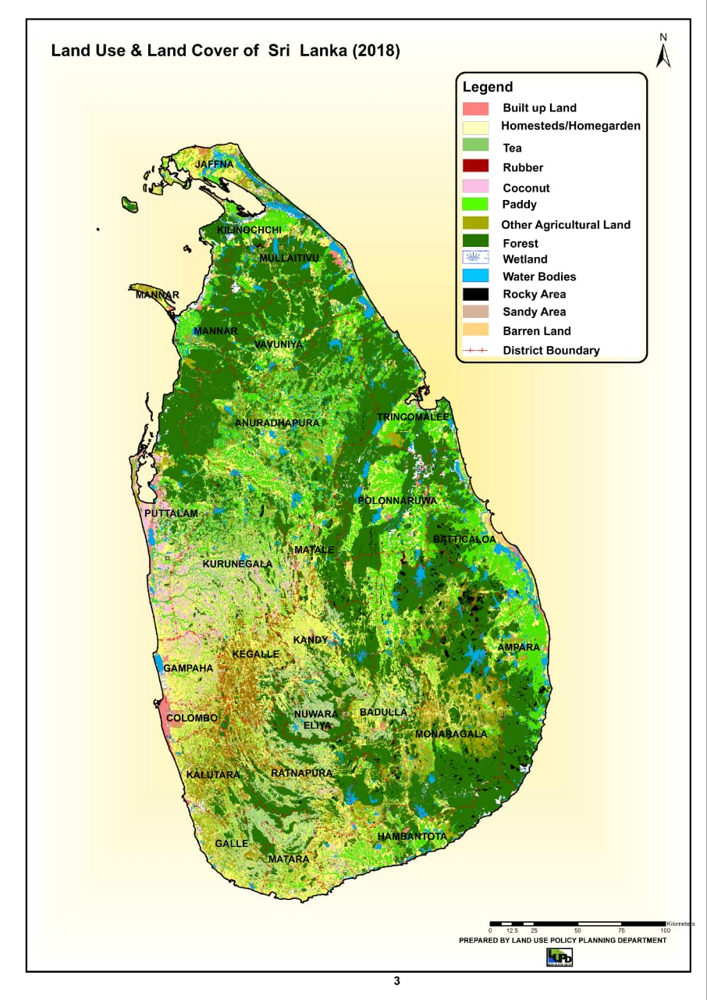

GROUP 05
Agriculture of Sri Lanka
இலங்கையின் விவசாயம் நெல் பயிரிடுவதில் முக்கிய கவனம் செலுத்துகிறது. மேலும் அது பல்வேறு வகையான பயிர்களையும், தோட்டப் பயிர்களையும் கொண்டுள்ளது. இது நாட்டின் பொருளாதாரத்தில் முக்கியப் பங்கு வகிக்கிறது.
முக்கிய அம்சங்கள்:
- நெல் (Paddy) - பிரதான உணவுப்பயிர்
- பல்வேறு பயிர்கள் (Various Crops) - மரக்கறி, பழங்கள்
- தோட்டப் பயிர்கள் (Plantation Crops) - தேயிலை, இறப்பர்
- அரச நிறுவனங்கள் (Govt Institutions) - விவசாயத் துறையை ஒழுங்குபடுத்துகின்றன
இலங்கையின் விவசாயம் தட்பவெப்பநிலை மற்றும் நில அமைப்பிற்கு ஏற்ப பல்வேறு வகைகளாக பிரிக்கப்பட்டுள்ளது:
- தன்னிறைவு வேளாண்மை (Subsistence Farming)
- மாற்றிட வேளாண்மை (Shifting Cultivation)
- தீவிர வேளாண்மை (Intensive Farming)
- வணிக வேளாண்மை (Commercial Farming)
- தோட்டப் பயிர்கள் (Plantation Agriculture)
- கலப்பு பண்ணை (Mixed Farming)

Tea, Rubber, and Coconut cultivation are vital export earners.
Land Use and Land Cover of Sri Lanka
Land Use Policy Planning Department (2018)